Creator's Statement创作者陈述
Games have always been how I stay close to friends: Flash multiplayer games, then LAN co-op, then online worlds. They give us a shared identity in another world and a break from everyday pressure. This project treats a game as a social tool — an MMORPG where puzzles, co-operation and character growth all pull players into playing together.
对我来说，游戏一直是和朋友保持联系的方式：从 Flash 多人小游戏，到局域网合作，再到网络游戏。它让我们在另一个世界里有共同的身份，也能暂时放下日常的压力。这个项目就是把游戏当作社交工具：一个用解谜、合作和角色成长把玩家拉到一起玩的 MMORPG。
I had played The Witcher 3 for 200 hours and was drawn in by its story and world, which made it a strong theme for a game. I had also been developing Minecraft servers since middle school. Before I knew Unity or any other engine, Minecraft was the platform where I could actually build it.
我自己玩了 200 小时《巫师 3》，被它的剧情和世界观深深吸引，觉得这是很好的游戏题材。我从初中就开始做 Minecraft 服务器开发。那时我还不会 Unity 等引擎，Minecraft 就是我能真正把这个游戏做出来的平台。
Research & References调研与参考
Reference games参考游戏
The team studied many games. MMOs such as World of Warcraft were the main reference for group play, class roles and boss mechanics; The Witcher 3 set the world and tone.
团队调研了很多游戏。《魔兽世界》等 MMO 是组队玩法、职业定位和 Boss 机制的主要参考，《巫师 3》决定了世界观和基调。


Level-design theory关卡设计理论
Early on I could not say what makes a level well designed. Reading level-design theory showed that simple devices matter most: obstacles that hide the goal and secondary paths that give the layout a second route.
一开始我说不清什么样的关卡算好。读了关卡设计理论之后才明白，最普通的手段反而最关键：挡住目标的障碍物，和给布局多一条路线的支线路径。


Proposal立项提案
- Goal — systems that satisfy both an MMORPG and an ARPG, so social play and combat support each other.目标：系统同时满足 MMORPG 和 ARPG 的需求，让社交和战斗互相支撑。
- Pillars — social interaction, puzzles, co-operation, character development.支柱：社交互动、解谜、合作、角色成长。
- Combat — action-RPG combat on top of vanilla Minecraft.战斗：在原版 Minecraft 上做动作 RPG 战斗。
- Group play — class roles built so dungeons need a team.组队：职业定位让副本必须组队。
I started the project, and later founded Wuhan Chakabei Game Technology to develop and run it as the company's product.
项目由我发起，之后专门成立武汉茶卡贝游戏科技有限公司，把它作为公司产品来开发和运营。
Ideation & Prototype构思与原型
The first prototype recreated Witcher 3-style dialogue features inside Minecraft.
第一个原型是在 Minecraft 里复刻《巫师 3》式对话的系统功能。
The first version was planned as five groups of systems, each expanded into connected features: character & item management, combat & interaction, quest & exploration, social & multiplayer, and interface & utility. Some systems were planned for social play from day one; others appeared when development exposed a need.
第一个版本按五类系统规划，每类再展开成互相关联的功能：角色与物品管理、战斗与交互、任务与探索、社交与多人、界面与工具。有些系统从一开始就是为社交设计的，另一些是开发中发现需要才加的。


As lead programmer I built the base the rest of the game stands on: damage resolution and the damage formula as the single entry point for skills, gear and potions; item types and inventory storage; and potion and item crafting with recipe data kept apart from logic so designers can add content on their own.
作为主程，我先搭了整个游戏依赖的底层：伤害判定和伤害公式，作为技能、装备、药水数值的统一结算入口；道具种类和背包存储；药水与道具合成，配方数据和逻辑分离，策划可以自己填内容。
Preproduction前期制作
Quests and items任务与物品
Quests were split into what the player sees and what the data holds. Testing showed quest information was critical, so it appears in both the inventory screen and the HUD for accepting and tracking.
任务拆成两部分：玩家看到的信息，和背后的数据。测试发现任务信息对体验非常关键，所以在背包界面和 HUD 两处都显示接取和进度。
Items started from real objects: each was broken down into attributes such as weight, price, type, quality and name, then turned into one tooltip format that adapts to any item category added later.
物品从现实中的物件出发：先拆出重量、价格、类型、品质、名称等属性，再做成一套能适配以后任何新物品类型的描述格式。


Classes and numbers职业与数值
Five classes sit on the tank / healer / damage-dealer triangle so dungeons need a team: Wolf (warrior), Bear (tank), Viper (assassin), Griffin (mage) and Cat (marksman).
五个职业建立在坦克 / 治疗 / 输出三角上，让副本必须组队：狼（战士）、熊（坦克）、蝰蛇（刺客）、狮鹫（法师）、猫（射手）。
Baseline values were set per level first. Each class then got growth trends by role — a warrior with medium attack and moderate defence, for example — and class combinations were used to compute the highest possible damage, which set monster stats.
先按等级定基础数值，再按职业定位给每个职业定成长趋势（比如战士是中等攻击、中等防御），最后用职业组合算出最高可能输出，用它来校准怪物数值。


Dungeons are the main source of resources. Monster drops, dungeon and quest rewards, world chests and the shop feed three sinks — crafting, enhancement and levelling — which all end in character progression. Experience sources change by chapter, so chapter one teaches through simple tasks.
副本是主要资源来源。怪物掉落、副本和任务奖励、野外宝箱、商店产出，流向合成、强化、升级三类消耗，最终都落到角色成长上。每章的经验来源比例不同，第一章靠简单任务带玩家入门。

Level layouts关卡布局
Levels go from sketch to a 2.5D map marked as safe zones, combat zones and roads. One map shows the boss room from the start but blocks the way in, so players take another route to find the key. Occluders and a narrow-to-wide view signal the fights ahead; box-pushing and 2D jumping sections break up the route.
关卡从草图到 2.5D 地图，标出安全区、战斗区和道路。有一张图一开始就能看到 Boss 房，但进不去，玩家得绕另一条路拿钥匙。遮挡物和由窄到宽的视野提示前方的战斗，推箱子和 2D 跳跃段落打断路线的单调。


Project management项目管理
Tasks and documents were managed in Feishu and Teambition at first; the team later moved everything to Tencent Docs.
前期用飞书和 Teambition 管理任务与文档，后来统一改用腾讯文档。
Dungeons & Encounters副本与遭遇战
Every chapter shipped a dungeon design document: positioning and loot, a level map, the scene mechanics the space is built from, the monster roster, and then a stage-by-stage breakdown where each stage is an annotated screenshot of the actual build. The documents below are the ones I wrote for the North Isle raid, the Forbidden Ritual dungeon and the chapter dungeon list.
每一章都会出一份副本设计文档：副本定位与产出、关卡地图、这个空间用到的场景机制、怪物清单，然后是逐阶段拆解——每个阶段配一张实际搭好的场地标注截图。下面是我写的北岛团本、禁咒仪式副本和各章副本清单。
Numbers the level is sized from关卡尺寸的依据
Room sizes and mechanic timings are derived from measured movement, not guessed: walking 3.87 blocks/s, running 6.72, jump-running 6.76, rolling 8.19. A dodge window is written as a distance the player can actually cover.
房间尺寸和机制时间来自实测移动速度，不是拍脑袋：行走 3.87 格/秒，奔跑 6.72，跳跑 6.76，翻滚 8.19。躲避窗口按玩家实际能跑过的距离来写。
| Field字段 | How it is written写法 |
|---|---|
| Positioning副本定位 | which tier, and where it sits between the existing difficulties — e.g. "tier 5, harder than Hard, easier than Nightmare, for players who clear the bandit Hard but not Nightmare"几级本，难度卡在现有档位之间——例如「五级副本，比噩梦低比困难高，给打得赢强盗困难、打不赢噩梦的玩家」 |
| Loot副本产出 | one to two item levels above blue gear, one or two slots per class (Bear: chest and legs; Wolf: silver and steel sword; Viper: gloves and boots), plus a life-skill recipe比蓝装高一到两级，每个职业只出一到两个部位（熊：胸甲、护腿；狼：银剑、钢剑；蛇：手套、靴子），另加副职业配方 |
| Level map关卡地图 | circles are combat areas, one correct path to the boss; the wrong branch triggers a rockfall that blocks it圆圈是战斗区域，通往 BOSS 只有一条正确路线；走错的岔路会触发落石堵住去路 |
| Scene mechanics场景机制 | the reusable hazards this space is built from, each with its counter这个空间用到的可复用机关，每个都写明解法 |
| Monster roster包含怪物 | which monsters appear where, and which ones are new art哪些怪出现在哪里，其中哪些需要新模型 |
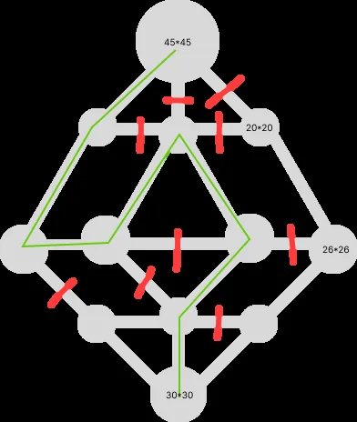
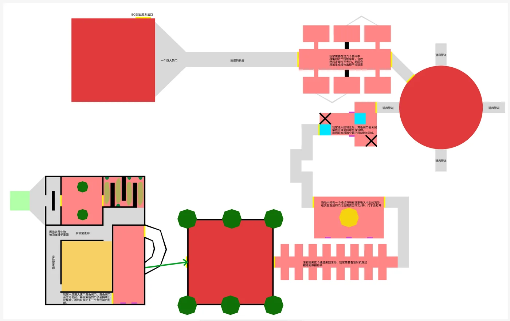
Scene mechanics as a reusable kit场景机制作为可复用件
The North Isle raid is assembled from seven hazards, each written with its counter, so stages can be composed instead of scripted one by one. Two of them exist specifically to make the Witcher signs matter inside a dungeon.
北岛团本由七种机关组合而成，每种都写明解法，这样阶段可以拼装而不是逐个写死。其中两种专门让猎魔人法印在副本里有用武之地。
| Hazard机关 | What it does效果 | Counter / note解法 / 备注 |
|---|---|---|
| Freezing wind寒风 | a yellow warning zone, then a gust; anyone hit is frozen inside a block, no movement, jumping or skills先出黄色警示区域，警示结束刮风；被吹到的玩家被冰块包裹，禁止移动、跳跃和技能 | only the Igni sign melts it safely; breaking it any other way damages the trapped player只有伊格尼法印能安全融化；其他方式打碎会伤到被困的人 |
| Cracking ice碎冰面 | breaks a few seconds after a player stands on it玩家站上去 X 秒后碎裂 | usually placed over frozen water下面通常是冻水 |
| Frozen water冻水 | continuous magic damage as a percentage of max health持续按最大生命百分比造成魔法伤害 | the floor under the cracking ice碎冰面下面的那一层 |
| Icicles冰柱 | breaking one with anything other than Igni damages everyone within a radius用非伊格尼的伤害击碎会对半径内玩家造成伤害 | rewards knowing which tool to use奖励「知道该用哪个工具」 |
| Falling icicles下落冰柱 | a shadow marks the ground and grows, then it lands on a 3-block radius地面出现阴影并逐渐变大，随后落在半径 3 格内 | the arena-wide pressure in stages 3 and 4第三、四关的场地压力 |
| Floor spikes地刺陷阱 | triggers on a delay, then goes on cooldown延迟触发后进入冷却 | makes the middle of the room a cost, not a wall让房间中间是代价而不是墙 |
| Blessing golem赐福魔像 | raises health, attack, armour and resist of monsters within range; destructible提高范围内怪物的生命、攻击、护甲和魔抗；可被破坏 | a priority target the raid has to notice需要队伍自己发现的优先目标 |
North Isle · 8-player raid, level 38北岛 · 38 级 8 人团本
The same tower the chapter-4 story dungeon uses, rebuilt as an eight-player raid: seven stages, each one a different kind of pressure — defend, survive, fall, boss, gate, coordinate, boss. Ghost NPCs along the route carry the backstory (a Frostheim guard who fell from above, an elf whose home Dol aëte was razed by its own kin), because the fiction says nothing alive is left on the island.
和第四章剧情副本同一座塔，重做成 8 人团本：七个阶段，每个阶段给不同类型的压力——防守、生存、坠落、BOSS、守门、配合、BOSS。沿途的半透明灵体 NPC 承载背景（从上面摔下来的弗罗斯特海姆警卫、家园 Dol aëte 被同族夷平的精灵），因为设定上这座岛不可能还有活人。
The ruined crystal is the only thing that can open the barrier ahead. Talking to the NPC unlocks it; interacting spawns four ice-crystal ore veins (silver pick, 5 minutes each) and starts waves of Wild Hunt soldiers every 10 seconds. The soldiers walk straight at the crystal and keep hitting it unless a player pulls aggro, so the raid has to split between mining and defending. Four veins finished = the crystal fires a wave that clears the field and breaks the barrier.
残缺的冰水晶是打开前方屏障的唯一办法。和 NPC 对话后才能交互，交互后生成四处冰晶矿（银镐，每个 5 分钟），同时每 10 秒刷一波狂猎士兵。士兵会径直走向水晶持续攻击，除非有人拉住仇恨，所以队伍必须分成挖矿和防守两组。四个矿挖完，水晶发射一道波清场并打碎屏障。
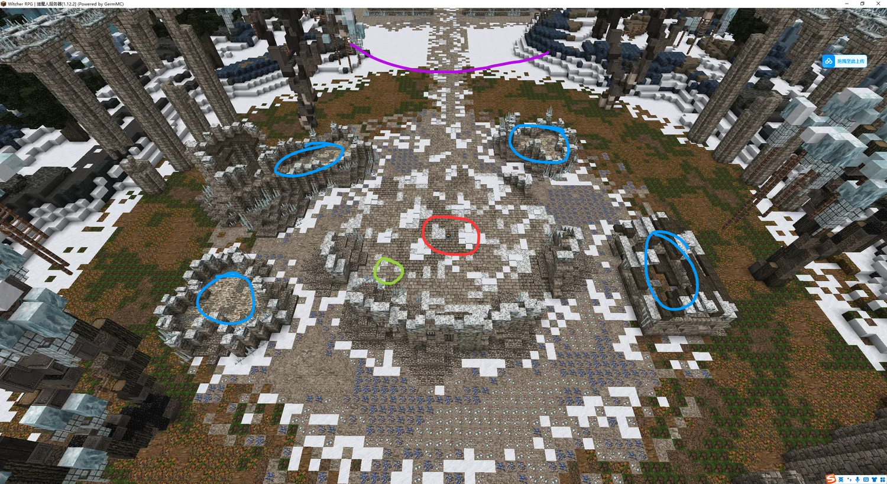
The NPC needs time to break a seal. The entrance seals behind the players with a red barrier, then freezing wind fires in three of five marked zones every 8 seconds for five minutes, with a wave of soldiers each minute. Fight and dodge at the same time. Being hit freezes you in a block that only the Igni sign can melt safely — anything else that breaks it damages the trapped player, so the counter is a specific tool, not just DPS.
NPC 需要时间破解法阵。入口在开战后被红色屏障封死，随后五个标记区域中随机三个每 8 秒刮一次寒风，持续五分钟，每分钟一波狂猎士兵。要一边清怪一边走位躲风。被吹到会被冰块冻住，只有伊格尼法印能安全融化，其他方式打碎会对被困玩家造成伤害——解法是指定工具，而不是单纯输出。
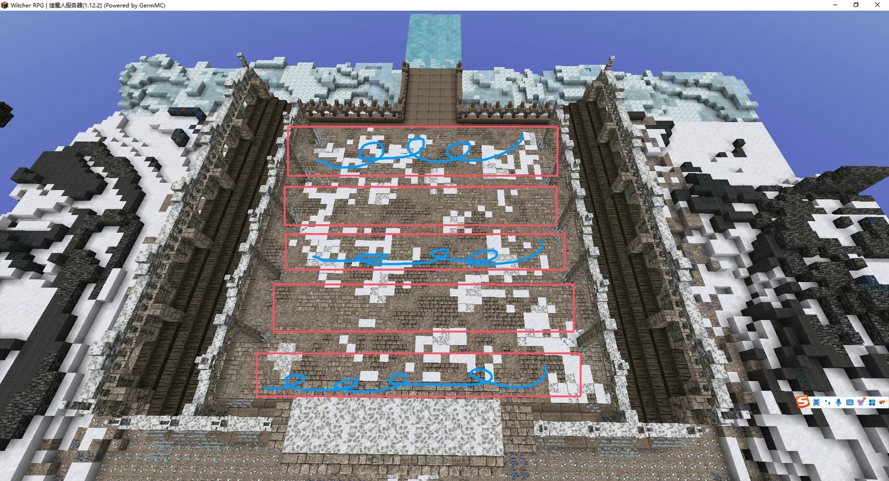
The ice bridge is walled off on three sides so nobody drops early; once everyone is on it the bridge plays its break animation, movement is locked so no one can run back, and the whole raid falls together. At the bottom: wind in two of four zones every 15 seconds, a wave of soldiers every minute, falling icicles marking a growing shadow every 5 seconds at 3–5 random points, and a mini-boss in the last wave.
冰桥左右前三面用空气墙封好，避免有人提前掉下去；所有人上桥后播放破裂动画，期间锁定移动防止有人跑回去，全队一起坠落。坑底：四个区域中两个每 15 秒来一次寒风，每分钟一波士兵，场地上方每 5 秒在 3–5 个随机点生成阴影预警后落下冰柱，最后一波带小 BOSS 冰语审判者。
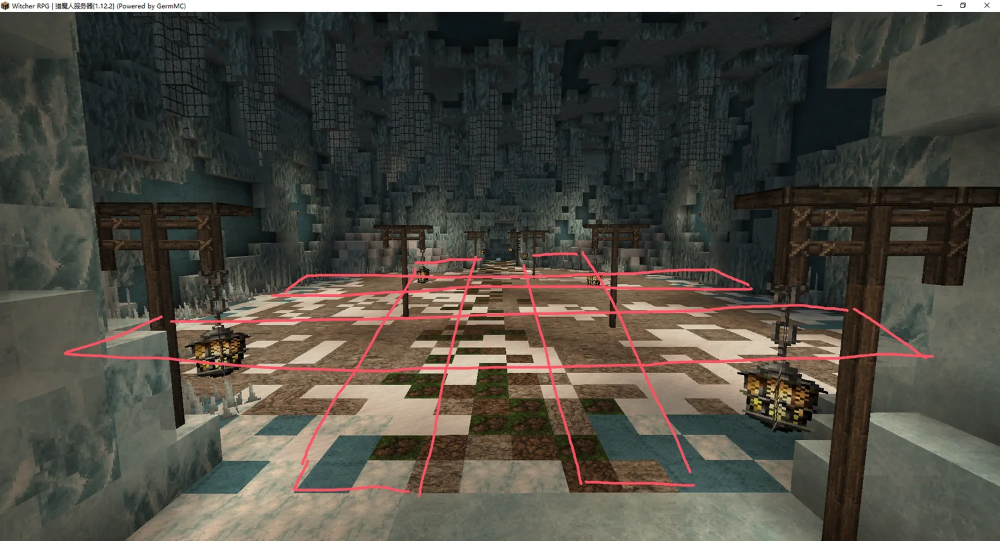
A green buffer zone and a red trigger zone: the first player to cross teleports everyone in, so the pull is always the full raid. The boss spawns dead centre and the arena drops icicles at ten random points every 10 seconds on top of the boss script.
绿色缓冲区 + 红色触发区：第一个踏入的玩家会把其余所有人传送进来，开怪永远是满编。BOSS 生成在场地正中心，在 BOSS 自身技能之上，场地每 10 秒在十个随机点落冰柱。
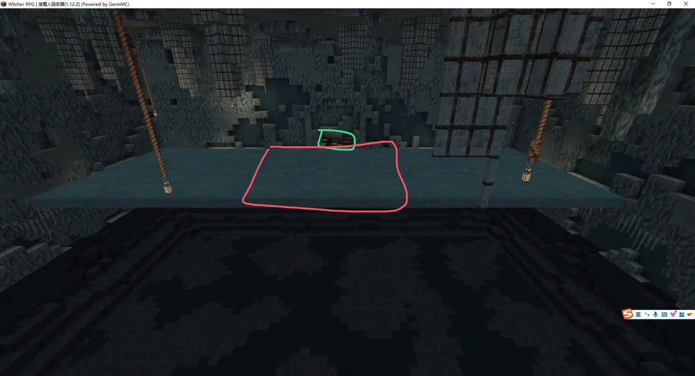
A gradient-yellow border warns that entering locks the way back. Wind fires in every marked zone at once every 8 seconds, and the purple seal on the door only disappears when the whole guard unit is dead.
边界用渐变黄屏障提示：进入该区域就会封锁退路。寒风每 8 秒在全部标记区域同时释放，门上的紫色魔法阵只有在守门部队全灭后才会消失。
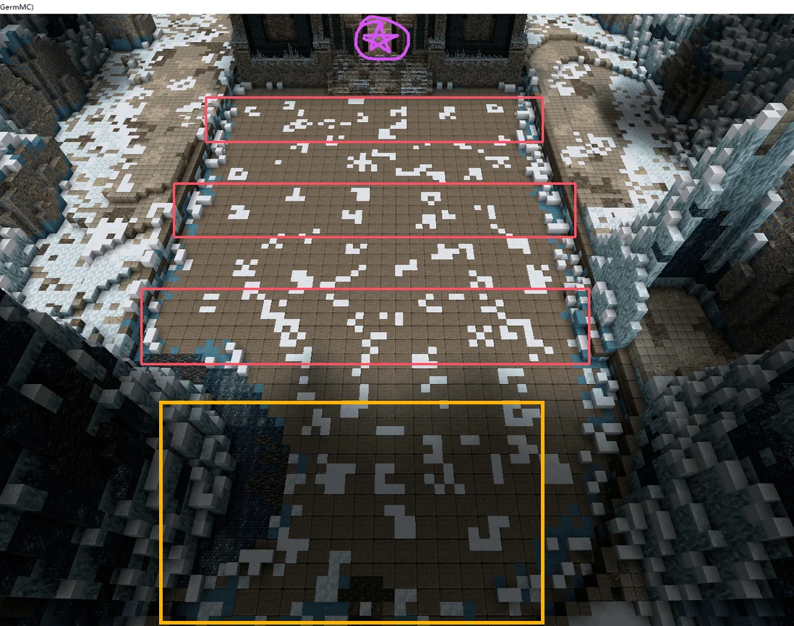
The core coordination puzzle. Sixteen invincible Wild Hunt soldiers, four marked zones; standing 3+ players in a zone strips invincibility from that zone's four soldiers. Meanwhile golems along both sides spray shadow energy forward every 4 seconds and the floor between them is spikes, so the players holding a zone are the ones who must dodge. The spray interval shortens over time: split the raid badly and the room becomes unsurvivable before the soldiers are down.
核心配合关。十六个无敌狂猎士兵，四个标记区域；有 3 人以上站在某个区域，就解除该区域对应四个士兵的无敌。与此同时两侧的魔像每 4 秒朝前方喷射暗影能量，中间地面是地刺，所以站桩解锁的人正是要躲的人。喷射间隔随时间越来越短：分工没分好，士兵还没清完房间就已经待不住了。
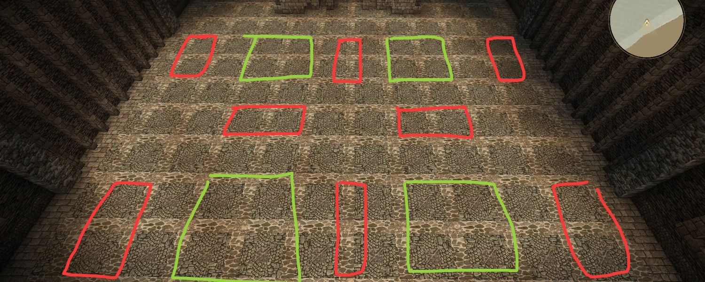
The follow-up room reuses the rule and removes the freedom: the four circles now light up one at a time in a numbered order, so the raid has to chase the active circle instead of parking on one. Same sixteen soldiers, same shrinking golem interval.
下一间房复用规则，去掉自由度：四个魔法阵按图上的编号顺序逐个出现再消失，队伍必须跟着亮起的圈跑，而不能站死一个位置。士兵数量不变，魔像间隔照样递减。
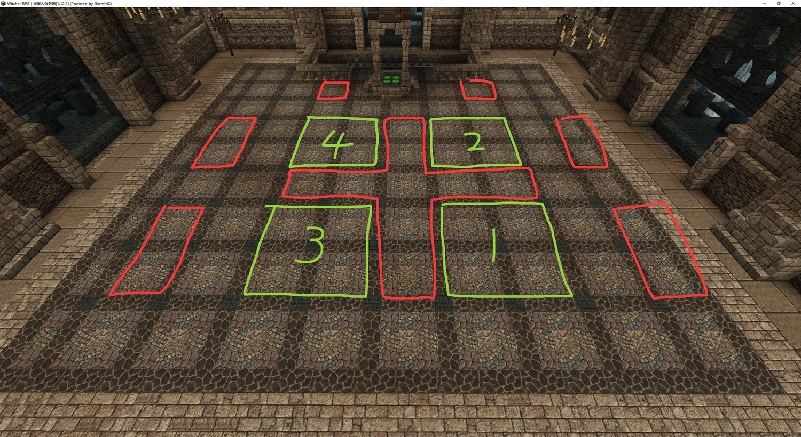
The door to the last stage is a magic circle that needs at least six players standing on it at once — a final check that the raid is still eight-strong and coordinated. The boss opens with a speech from a marked position before the fight starts.
进入最后一关的门是一个魔法阵，需要至少六名玩家同时踩上去——最后检查一次队伍是否还凑得齐、配合得上。BOSS 先站在标记位置说完话，然后开战。
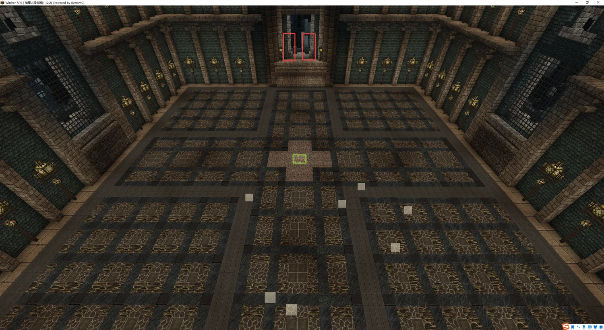
Forbidden Ritual · monsters that attack your resources禁咒仪式 · 打资源的怪物组
A dungeon where the whole roster attacks one thing: your resource bar. Trash drains mana, drains stamina so the next skill costs more, or blocks healing outright; the elite curses the raid's mana regeneration and silences someone; the boss converts healing you receive into healing for itself. Instead of bigger numbers, the difficulty is that the usual sustain loop stops working.
一个整套怪物都在打同一样东西的副本：你的资源条。小怪抽法力、削精力（让下一个技能更贵）、或者直接禁疗；精英给全队上禁咒降低法力回复并随机沉默一人；BOSS 把你受到的治疗转移到自己身上。难度不是数值更高，而是平时的续航循环失效了。
| Monster怪物 | Mechanic机制 |
|---|---|
| Ritual Warden禁咒侍卫 | attacks have a chance to cut mana and stamina and apply a light healing block攻击有几率降低法力和能量，并附带轻微禁疗 |
| Shadow Wailer影噬哀嚎者 | periodic wail leaves poison mist that drains mana and stamina and slows定期哀嚎留下毒雾，持续抽法力和精力并减速 |
| Bound Remnant魔缚残影 | counters melee attackers: reduces their healing received and their damage被近战攻击时反制：降低对方受疗和输出 |
| Mana Devourer蓝能吞噬者 | drains mana; if the target has none it deals shadow damage instead. On death it bursts and refunds mana to whoever it hits汲取法力；目标没蓝则改为暗影伤害。死亡时向四周炸出特效，命中的玩家回蓝 |
| The Drained精力枯竭者 | hits cut stamina so the next skill costs more攻击削减精力，使下一次技能消耗增加 |
| Heal-Denier绝疗禁卫 | a strike that blocks all healing on the target for several seconds禁疗攻击，使目标数秒内无法受到任何治疗 |
| Fallen Cultist (elite)堕落教徒（精英） | mass curse: lowers the raid's mana regeneration and maximum mana, silences one player at random群体禁咒：降低全队法力回复与上限，随机沉默一名玩家 |
| Chaos Clawguard (elite)混沌爪卫（精英） | armour-piercing hits with a short stun that forces a reposition; retaliates after taking consecutive hits攻击带穿透和短暂眩晕，逼迫重新站位；连续受击后触发反击反弹伤害 |
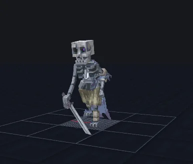
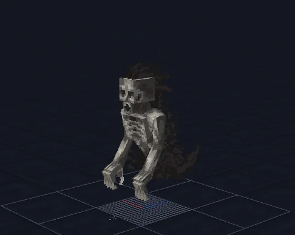
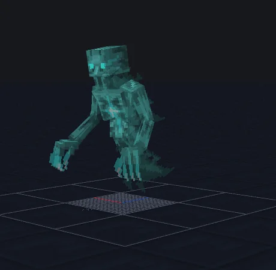
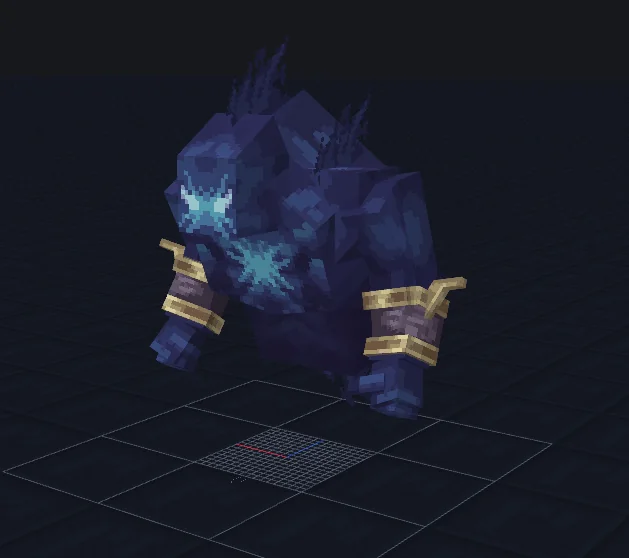
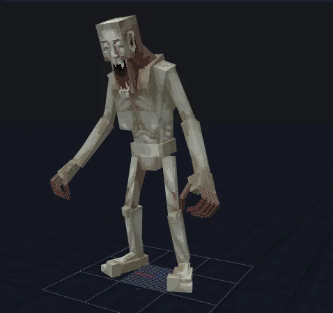
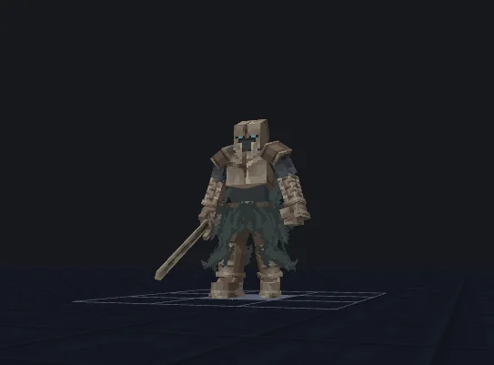
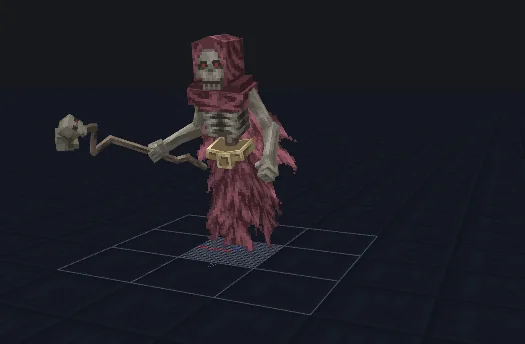
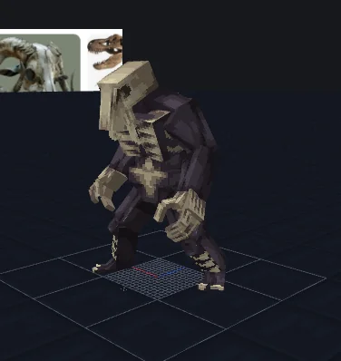
Boss · the Fallen High PriestBOSS · 堕落大祭司
A sage who chased forbidden magic into the dark and now runs the ritual. His kit finishes the theme the trash started: the fight is about keeping your own sustain working while he takes it away from you.
一位追求禁忌魔法而堕入黑暗的贤者，如今主宰着禁咒仪式。他的技能组把小怪铺的主题收尾：这场战斗的核心是在他不断拿走你续航能力的同时把它维持住。
| Skill技能 | What it does效果 |
|---|---|
| Ritual Summon禁咒召唤 | summons adds on a timer and lays a curse on the whole raid that keeps mana regeneration and healing down定时召唤小怪协同作战，同时给全队施加持续降低法力回复和治疗效果的禁咒 |
| Fallen Shield堕落护盾 | activates at a health threshold, absorbs a large amount of damage and converts part of it into mana for himself — so the raid has to break it fast, not chip at it生命值降至一定比例自动激活，吸收大量伤害并把其中一部分转化为自身法力回复——所以护盾要快速击破，不能慢慢磨 |
| Blood Offering血祭冲击 | spends his own health to power the next hit: a high-burst frontal cone with a short stun以自身生命为祭，大幅提升下一次攻击：前方扇形高额爆发并附带短暂眩晕 |
| Curse of Despair绝望禁咒 | marks one player: armour and resist down, and every point of healing they receive — potions, lifesteal, a healer — is transferred to the boss instead点名一人：护甲与魔抗降低，并且他受到的一切治疗（药品、吸血、被治疗）全部转移到大祭司身上 |
| Dark Shockwave暗能冲击波 | staff into the ground: a 60°, 5-block cone in front deals shadow damage and knocks back, while the remaining 300° fires a wave every 30°法杖砸地：正前方 60°、半径 5 格的扇形造成暗影伤害并击退，剩余 300° 每 30° 发射一道暗能波 |
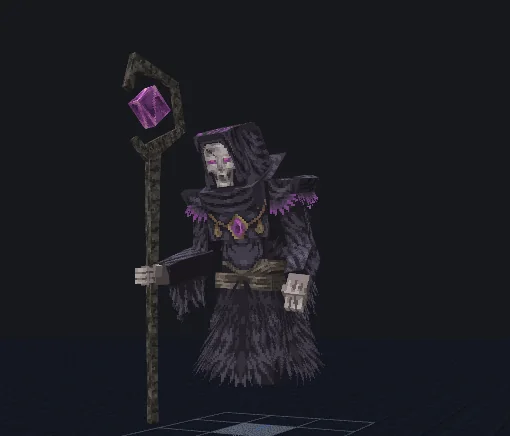
Design hands art a shot list, not a mood board设计给美术的是镜头清单，不是情绪板
Every monster in the document ships with the animation list the artist needs and how each one should read, so the spec is directly buildable. The Heal-Denier, for example: idle rests the sword on the right shoulder; walking holds it across the chest with both hands and plants every step (explicitly not a samurai grip); taking a hit blocks with the left elbow and props the sword on the ground; death is a stagger backwards onto one knee with the sword braced; the healing-block attack winds up slightly backwards and thrusts.
文档里每个怪都附动作清单，写明每个动作该是什么感觉，美术可以直接做。比如绝疗禁卫：待机把剑扛在右肩；走路双手握剑横在胸前、每一步踩得很实（明确写了不是武士握法）；受击用左手肘格挡、剑杵在地上；死亡向后踉跄最后单膝跪地用剑撑住；禁疗攻击向后微微蓄力然后前刺。
Mechanic rooms: one rule each机制房：一间一条规则
- Hall of Refracted Echoes — one laser bounces off the walls; every fourth bounce spawns another ray. Survive to the timer. The room gets harder on its own, no spawns needed.反光回廊：一道激光在墙间反弹，每反弹四次裂变出一道新的。撑到时间结束即通过。房间自己会变难，不用刷怪。
- Pale Hauler's Passage — a ghost cart only moves while players are near it and no monsters are alive, so escorting it is a clearing problem with a moving anchor.灰影送葬：幽灵货车只在玩家靠近且场上无怪时沿既定路线前进，护送因此变成一个「锚点会移动的清怪问题」。
- Bridges of the Shade — four platforms, and each round announces a rule about how the raid must distribute itself: all four equal; equal in pairs but not all four; only the most crowded platform is spared; exactly two platforms empty; exactly one empty; exactly three empty; the smallest platform is punished; the middle ones are punished; only one platform may hold an even number. Ten seconds to move, then it resolves — and anyone still standing on a connecting bridge fails it for everyone.幽影之桥：四个平台，每轮公布一条队伍分布规则：四台人数完全一致；两两相等但不能全相同；只有人最多的台免罚；必须正好空出两台；正好空一台；正好空三台；人最少的台受罚；中间的受罚；只允许一台是偶数人。10 秒跑位，然后结算——结算时还站在连接桥上的，直接判全员失败。
Each rule ships with the in-game line that announces it ("Balanced quadrants: every platform must hold exactly the same number!"), so the room teaches itself without a tutorial.
每条规则都配一句游戏内播报（「平衡的象限：每个平台人数需完全一致！」），房间不需要教程就能自己教会玩家。
Content planning across a chapter按章节铺内容
The same document plans a whole chapter's spaces as a list: for each location, whether it is open world or an instance, its structure, its enemies, the NPCs in it and the quests that pass through it — eight locations for chapter five, from the palace (a plaza for the boss fight, a banquet hall, a statue that opens the chapter-end dungeon) down to a small alchemist's cave.
同一份文档按章节把所有场景铺开：每个地点写明是大地图还是副本、结构、敌人、NPC 和经过它的任务——第五章八个地点，从王宫（广场打 BOSS、宴会大厅、可互动雕像通往章末副本）一直到小型的炼金术士据点。
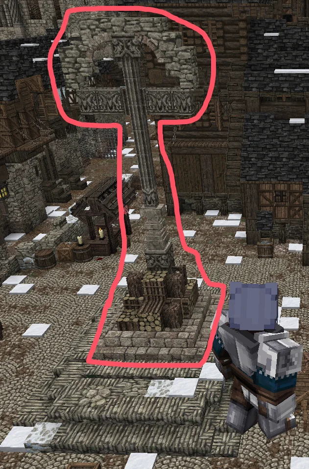
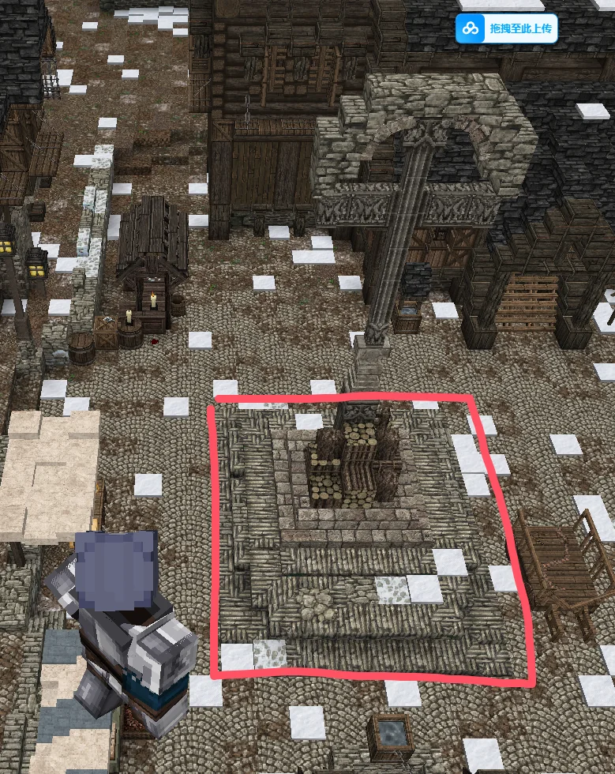
The documents themselves文档原页
Unedited pages from the internal design documents — the working artefacts the team built from, in the form they were written. Click any page to read it full size.
内部设计文档的原始页面，未经整理——团队照着施工的就是这些，保持写的时候的样子。点开任意一页可看大图。
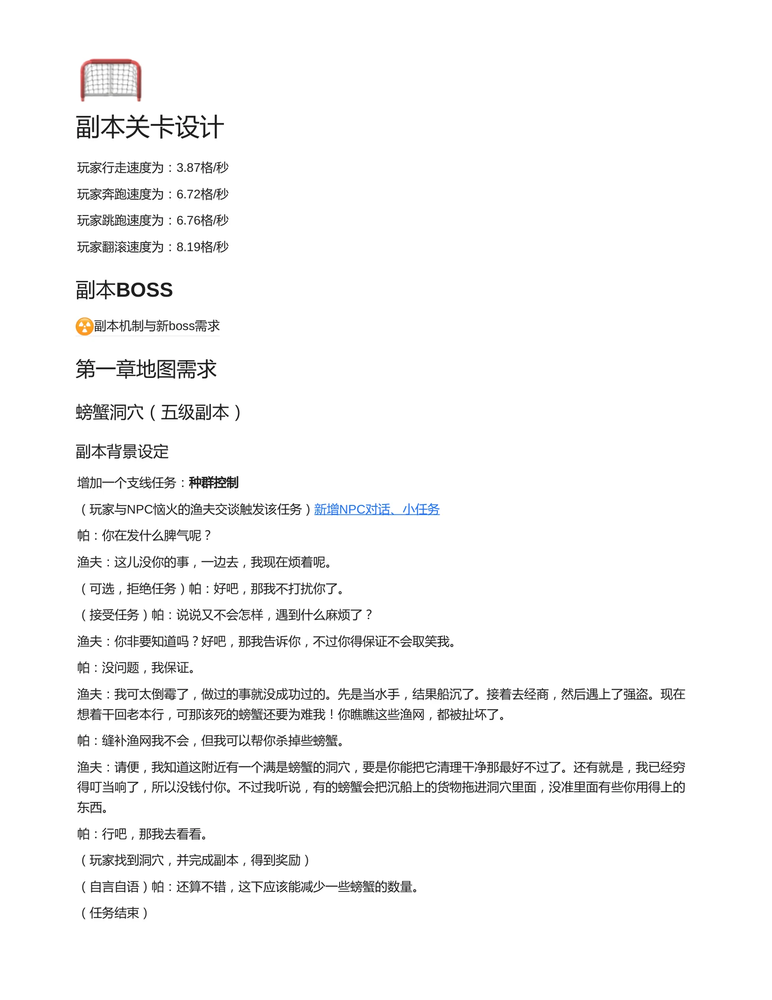
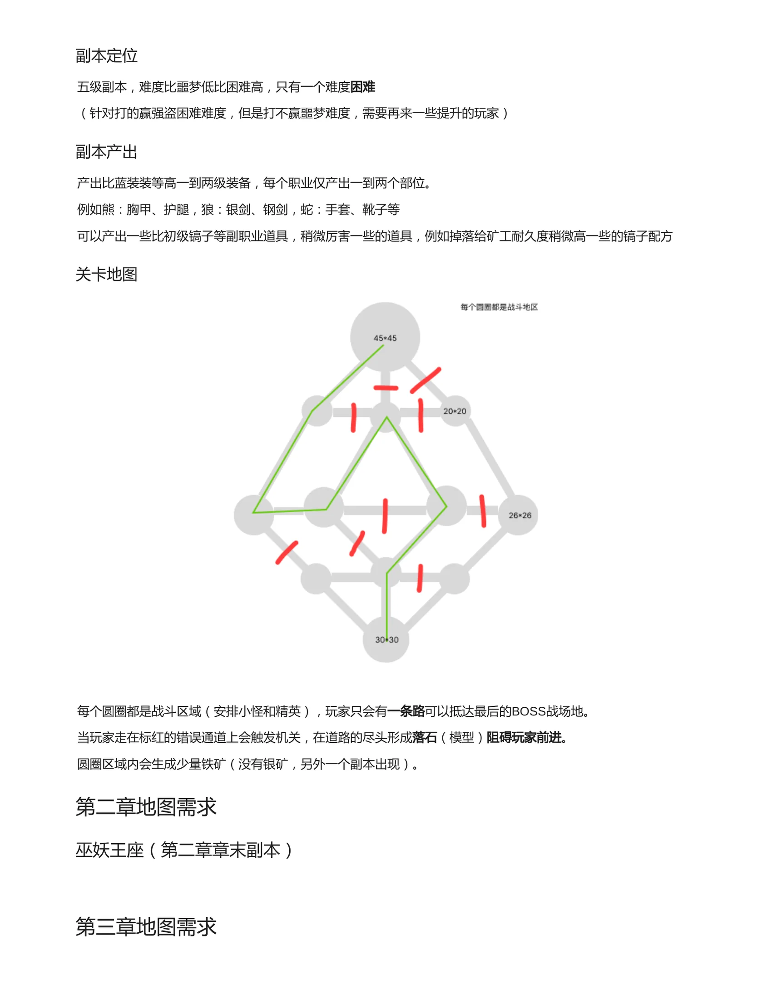
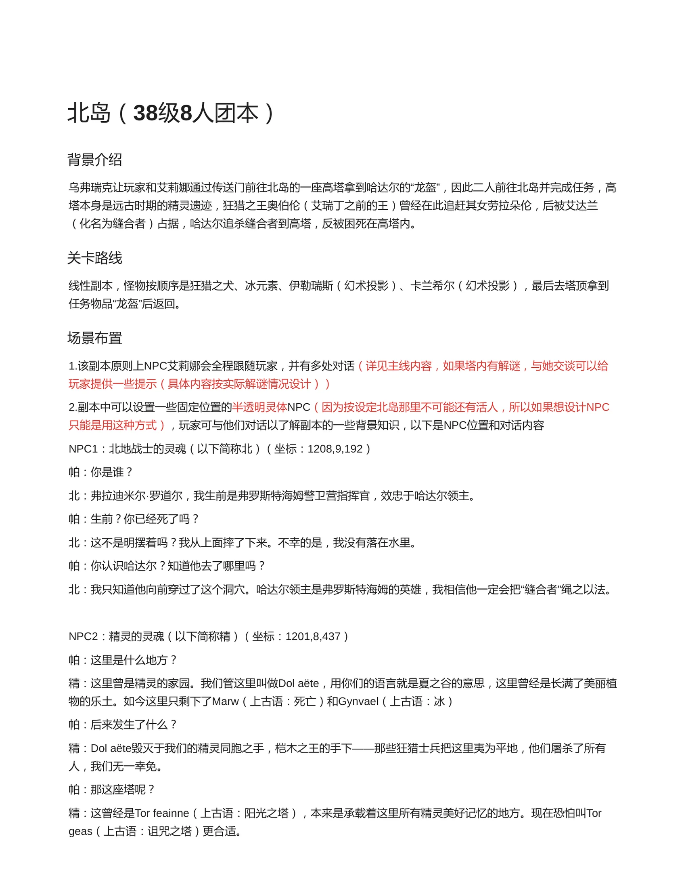
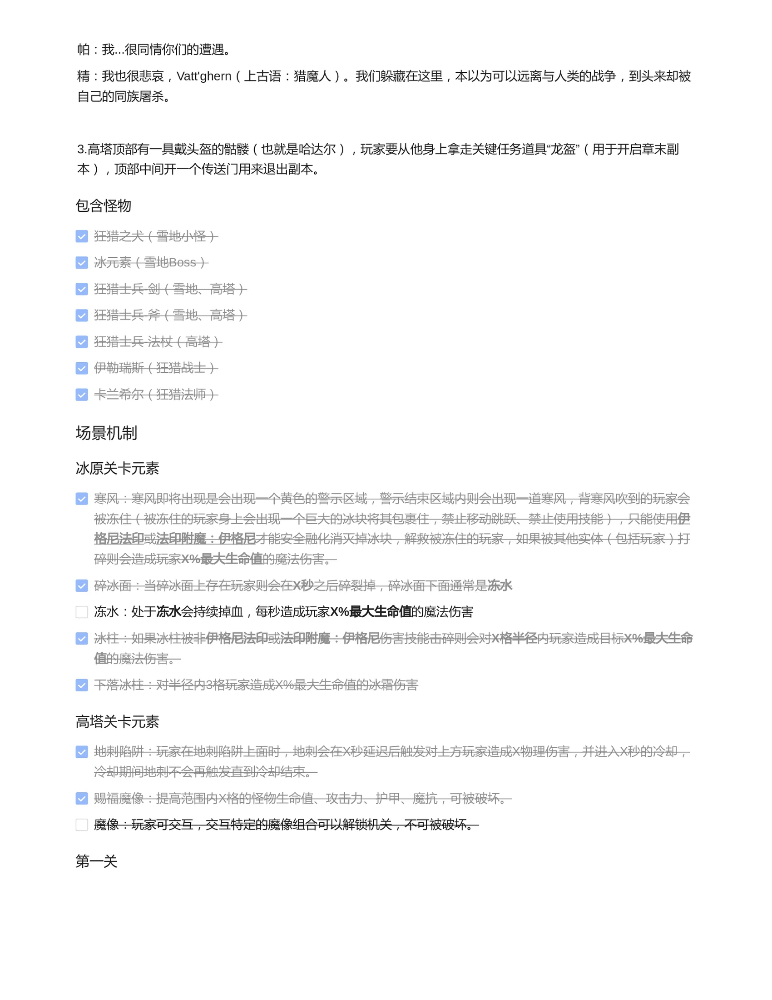
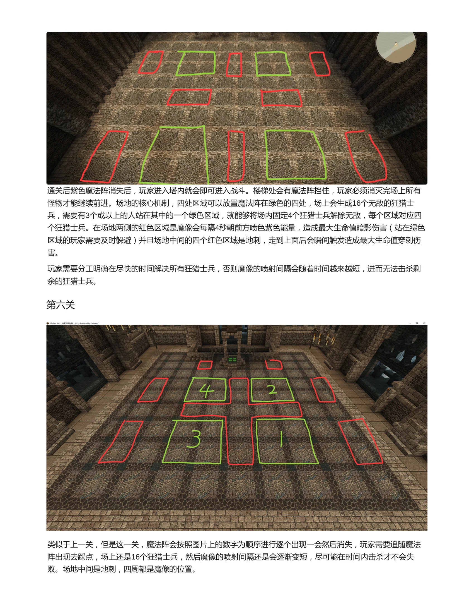
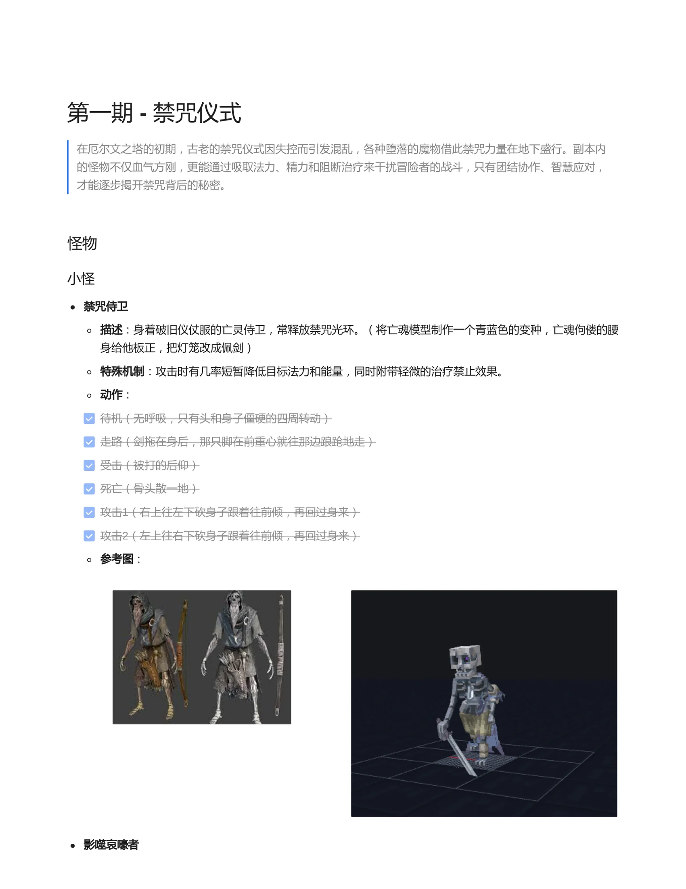
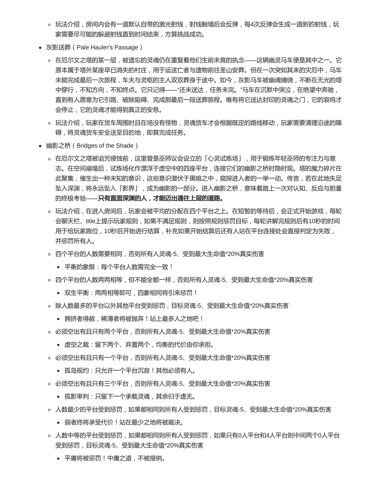
Production制作
Combat feel战斗手感
Combat was analysed as five layers — attack animation, damage logic, hit effect, hit feedback and sound — and each was rebuilt.
把战斗拆成五层分析：攻击动画、伤害逻辑、受击特效、受击反馈、音效，然后逐层重做。

Damage resolves on a detection frame followed by a damage frame. If the target has already been hit, its own attack is cancelled, so opponents visibly stop instead of trading blows through each other.
伤害按「判定帧 → 伤害帧」结算。目标已被命中时，取消它自己的攻击，对手会明显停下，而不是互相穿模对砍。

Bleed effects follow the direction of the attack, with the angle randomised inside a range.
出血特效方向跟随攻击动作，角度在一定范围内随机浮动。

A reinstate animation between combat and standby replaced the instant snap back to idle.
在战斗和待机之间加了收招动画，替代原来瞬间切回待机。

Hit-stop and camera shake when an attack connects. Sound grew from two cues (monster hurt, BGM) to four (player attack, attack hit, monster hurt, BGM).
命中时加顿帧和镜头震动。音效从两类（怪物受伤、BGM）扩到四类（玩家攻击、攻击命中、怪物受伤、BGM）。


Monsters and HUD怪物与 HUD
Monsters first ran on default Minecraft behaviour and wandered without purpose. A custom state machine (patrol → goal sequence → wait / approach / cast skill) replaced it, and a maneuver state keeps distance: closing in when the player backs off, pulling back when the player closes in.
怪物最初沿用 Minecraft 原版行为，漫无目的地走。改成自定义状态机（巡逻 → 目标序列 → 等待 / 接近 / 释放技能），并加入「周旋」状态保持距离：玩家后退就逼近，玩家靠近就拉开。
The first HUD imitated other games and was unclear. It was rebuilt from what each system needs to show: consumable quick-bar, status bars, combat prompts, buffs, boss health, quest tracking and the minimap.
第一版 HUD 是模仿别的游戏做的，信息不清楚。之后按每个系统需要展示什么重做：消耗品快捷栏、状态条、战斗按键提示、Buff、Boss 血条、任务追踪和小地图。


Server data and systems服务端数据与系统
Data is sorted into persistent, temporary, frequently accessed and rarely accessed. On login, player data moves from MySQL into a Redis cache; the server writes the cache back every 30 minutes and on logout, so a crash loses little.
数据分为持久、临时、高频访问、低频访问四类。玩家登录时从 MySQL 读入 Redis 缓存，服务器每 30 分钟和玩家下线时写回，服务器崩溃时损失很小。

- Quests — a quest → sub-quest → goal model configured in YAML, five quest types (main, side, hunt, treasure, daily) and 30+ goal types (kill, collect, NPC, dungeon, forging, alchemy…). Only runtime fields are stored; progress uses event listeners instead of polling, saves to Redis / MySQL and resets daily.任务：「任务 → 子任务 → 目标」三层模型，YAML 配置；主线、支线、狩猎、宝藏、每日五类任务，30+ 种目标类型（击杀、收集、NPC、副本、锻造、炼金……）。只存运行时需要的字段；进度用事件监听代替轮询，存入 Redis / MySQL，每日定时重置。
- Items — a modular text-format editor for item descriptions.物品：模块化的物品描述格式编辑器。
- Social — chat and friends handle events in one place so no view misses an update.社交：聊天和好友的事件集中处理，避免某个界面漏更新。
- Also built — NPC dialogue trees, party system for world and dungeons, async dungeon loading, director-mode camera recording.其他：NPC 分支对话、大世界与副本通用的组队系统、副本异步加载、「导演模式」运镜录制。


Levels, dungeons and late content关卡、副本与后期内容
A level-design tool built for customisability, stability and scalability. Dungeons run as info screen → room screen → in progress → settlement. Quest navigation draws an A* path with a guiding beam and marks the minimap.
关卡设计工具以可定制、稳定、可扩展为目标。副本流程为：信息界面 → 房间界面 → 进行中 → 结算。任务导航用 A* 生成路径，配追踪光束，并在小地图上标记目标。


- Roguelike tower climb — random routes, reward builds and a growth loop, linked to hidden dungeons.肉鸽爬塔：随机路线、奖励构筑、成长产出闭环，并联动隐藏副本。
- Fishing — a life skill with its own output and growth loop, tied into the economy.钓鱼：独立产出与成长循环的生活技能，接入经济系统。
- Raid bosses — phase changes swap the boss skill set; skill triggers, target selection and damage resolution tuned for group play.团本 Boss：阶段切换改变技能组；技能触发、目标选择、伤害判定针对多人协作调整。
Testing & Polish测试与打磨
Three test rounds ran before launch, with about 50, 100 and then 50 players online at once. The changes below came out of testing.
上线前做了三轮测试，同时在线分别约 50、100、50 人。下面的改动都来自测试。


Release & Operations发布与运营
Operations started during the C-test: talking with players every day made it clear that keeping the community active is part of the game. That became a launch plan in four stages.
第一次接触运营是在 C 测期间：每天和玩家交流，意识到维持社区活跃本身就是游戏的一部分。于是做了分四个阶段的上线运营计划。

- Preparation — promo videos, launch events, activities for each upcoming holiday.准备：宣传视频、上线活动、节日活动。
- Marketing & acquisition — heavy promotion at launch, players spreading the word.宣发拉新：上线集中宣传，靠玩家互动扩散。
- Retention — daily check-ins and activities during the activity peak.留存：活跃高峰期做每日签到等活动。
- Re-engagement — events that bring returning players back as the player base settles.回流：玩家数稳定后用活动拉回老玩家。
For launch, a prize wheel gave spins for sharing the game and referral rewards paid out for bringing in new players, making players the main promotion channel.
正式上线时，分享游戏可以抽转盘，邀请新玩家达到人数给奖励，把玩家变成主要的推广渠道。
- Launch — September 2024 on our own server platform, with about 500 players online at opening; about 10,000 players registered over its lifetime.开服：2024 年 9 月在我们自己的服务器平台上线，开服同时在线约 500 人；运营期间累计注册约 10,000 人。
- Channels — Bilibili for promotion, where the gameplay PV passed 100,000 views, and QQ groups for the community, about 4,000 members in total.渠道：B 站宣发，实机 PV 播放量十几万；QQ 群运营社区，群成员共约 4000 人。
- End of service — operations stopped in September 2025.停服：2025 年 9 月停止运营。

What's Next后续计划
After operations ended in September 2025, the same team started designing its next Minecraft MMORPG in May 2026, modeled on Albion Online:
2025 年 9 月停止运营后，同一团队在 2026 年 5 月开始策划下一款 Minecraft MMORPG，以《阿尔比恩 Online》为模板：
- Gear is your class — no fixed classes; weapons give active skills, armour gives passives.装备即职业：没有固定职业，武器决定主动技能，防具决定被动。
- Full-loot PvP — dying in red and black zones drops all equipped gear.全装备掉落 PVP：在红区、黑区死亡会掉光身上装备。
- Player-driven economy — nearly all gear is crafted by players; NPCs sell no equipment.玩家驱动经济：几乎所有装备由玩家生产，NPC 不卖装备。
- Guild territory wars — a weekly large-scale guild battle decides who holds resource points.公会领地战：每周一次大规模公会战决定资源点归属。
- Random dungeons — the layout is regenerated on every entry.随机地牢：每次进入布局随机生成。
The project took me into areas I had never worked in, and showed that a good game needs a united team — clear communication is how the obstacles got solved.
这个项目让我接触了很多从没做过的领域，也让我明白好游戏需要团结的团队，障碍都是靠有效沟通解决的。
Team团队
The team grew from two people to nearly fifteen over the project.
团队在项目过程中从 2 人发展到近 15 人。
- Lizhuoyuan Wan
- Zhaoyang Gong
- Xuanyu Wang
- Qianyu Zhang
- Hongyu Yang
- Guanping Peng
- Zekun Yang
- Yiyang Mao
- Zhou Dong
- Xijun Ma
- Wang Lang
- Jialong Chen
- Junxuan Li
- Xiwei Huang